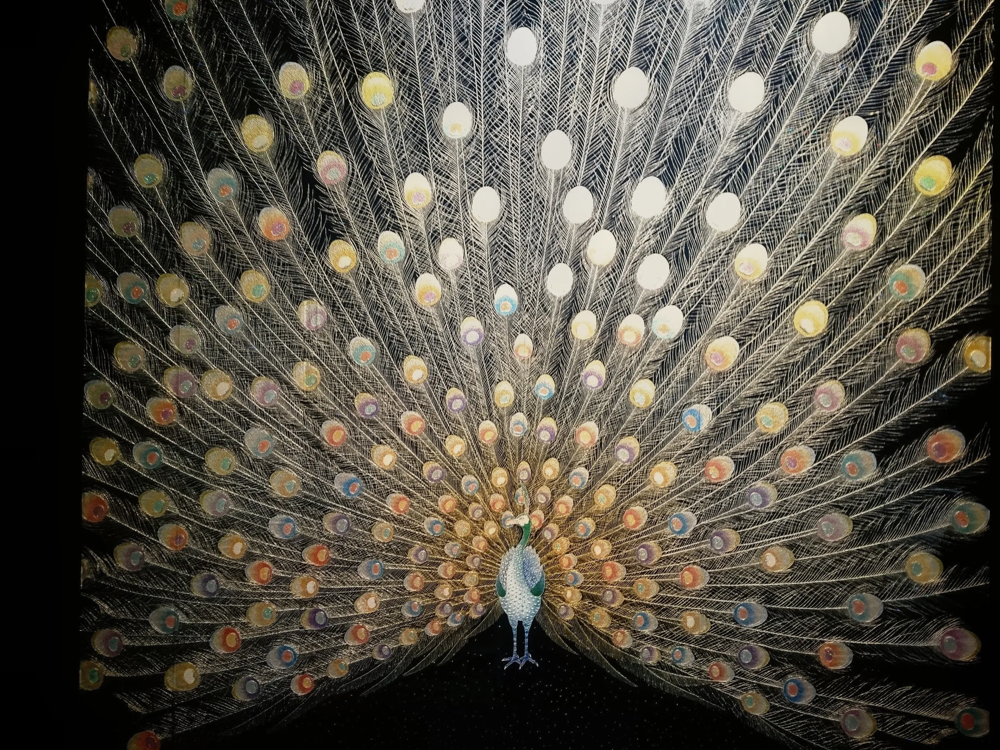

Artist · Architect · Spatial Designer / Kyoto, Japan
選ばれた
実績。
横田満康の歩みを、作品の来歴として。和硝子の誕生、京都駅での展示、国内の文化施設、そしてニューヨークから台湾へ。海外のコレクターが「誰が、どこで、どのように評価されてきたか」を追える構成です。

横田満康の歩みを、作品の来歴として。和硝子の誕生、京都駅での展示、国内の文化施設、そしてニューヨークから台湾へ。海外のコレクターが「誰が、どこで、どのように評価されてきたか」を追える構成です。
横田満康は建築家として空間づくりに携わり、着物デザインの経験を背景に、京友禅や西陣織の帯そのものをガラスに封じ込める「和硝子」を展開してきました。MBS『京都知新』は、2013年から和硝子を本格的に制作し始めたことを紹介しています。
このページでは、第三者媒体や施設・企業発表で確認しやすい実績を優先掲載し、賞歴・寄贈歴などは証明資料が揃った段階で追加する設計にしています。
ニューヨーク日本クラブでの個展は在ニューヨーク日本国総領事館の後援を受けたと和硝子屋の発表で紹介。NYBizにも2014年10月の「和硝子の世界」開催記録が残る。
ATPRESS ↗和硝子屋の公開資料では、ニューヨーク・チェルシーのアゴラギャラリー、テキサス州オースティンの東京エレクトロン・アメリカ本社ビル等での個展歴を紹介。年次表記には公開資料間で差があるため、本番では正式資料確認後に年を確定する。
ATPRESS ↗画像未設定：京都駅八条口の正式な展示写真は、baes_データからの選定・差し替え待ちです。
海外向けサイトでは、この実績をトップページ級に扱う価値があります。JR東海・東海キヨスクの2017年公式発表は、京都駅新幹線八条口「ギフトキヨスク京都」の柱内ディスプレイに横田氏の和硝子を展示し、販売したことを確認しています。
横田氏本人は現在公開している情報で「京都駅八条口に8点」と記載しています。本番公開時に、現地写真・現在の展示状況・設置開始年を本人資料で最終確認できれば、より強い “8 Works at Kyoto Station” として打ち出せます。
VIEW SOURCE
名古屋城「孔雀の間」での展示テーマとも親和する、和硝子の代表的な視覚世界。

金・黒・和柄の強い作品群は、海外のラグジュアリー空間との相性が高い。
画像未設定：台北展示（2024）の正式写真は、baes_データからの選定・差し替え待ちです。
現物体験とオンライン購入をつなぐ販売モデル。今後の海外展示＋自社ECの雛形になる。